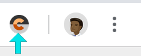

Color Contrast Companion
Quickly compute the color contrast of pixels anywhere on your screen.
This is a tool to compute the contrast between a foreground and background color, to help test whether an application is providing enough contrast so that text can be read by people with moderately low vision.
WCAG recommends these contrast ratios:
- AA: 4.5:1 for all text, 3:1 for 18 pts and larger.
- AAA: 7:1 for all text, 4.5:1 for 18 pts and larger.
- Focus indicators: 3:1 if 3px thick, 4.5:1 if less. (Source)
For more information, see the links at the bottom of this page.
How to use Color Contrast Companion
Note: If you're a web developer or if you're testing a web app, you already have great color contrast tools built directly into Chrome's Developer Tools! For more information, see Contrast ratio in the Color Picker.
However, there are cases where you might want to check the contrast of something on your screen that you can't inspect in Chrome's Developer Tools - such as Chrome's UI, text inside an image, or another app outside of Chrome. For those cases, this extension can help!
Step 1: Click on the Color Contrast Companion icon on the right side of the Chrome toolbar. If you have a lot of extensions installed, the icon might be inside the Chrome menu (the three dots).

Step 2: A Share Your Screen dialog pops up asking for your permission to share your entire screen with Color Contrast Companion. This is necessary for Color Contrast Companion to take a screenshot of your entire desktop. This image is never saved or sent to any server, it's only used to let you pick colors. Click the Share button.
Step 3: A window opens up showing a screenshot of your computer screen, magnified. Scroll to the portion of the screen containing the pixels you're interested in. Click once to pick the foreground color, click again to pick the background color. Keep clicking as many times as necessary if you're not happy with the colors you picked the first time.
Step 4: The contrast ratio is shown at the top of the page. Copy the text from the text box and paste it directly into a bug report if necessary, then click the Close button.
Further reading